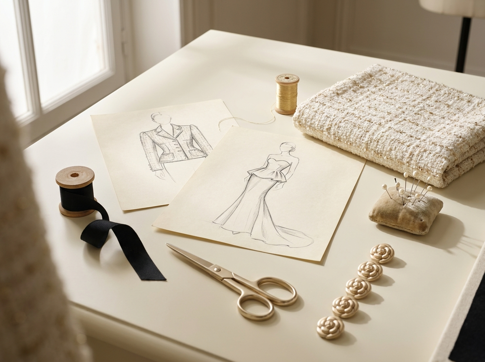
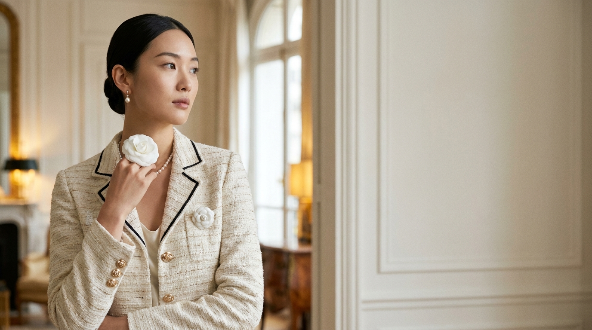
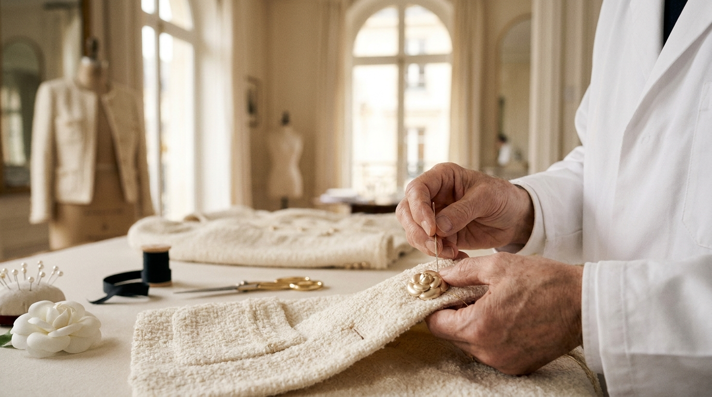

Atelier · Reportage
Behind the Seams: Inside the Atelier Rue de Sèvres
14 Rue de Sèvres 2층 — 메종의 손이 시작되는 한 평짜리 아틀리에에서, 한 점의 자켓이 38시간을 어떻게 머무는지.
Charlotte Mercier·12 min read

ALDORE
Le Journal — No 14
The Quiet Hour — Spring/Summer 2027
고요의 시간 — 메종의 SS27 백스테이지, 카멜리아의 기록
La Lettre de la Rédactrice
« Ce numéro est dédié à l'heure tranquille — celle entre le crépuscule et la première lampe. À ce qui se fait, sans bruit, dans les heures que la maison ne facture pas. »
Our fourteenth issue is, quietly, about hours. Hours hand-stitching a single gold camellia button. Hours pinning grosgrain at the lapel. Hours when the maison is closed and only the seamstresses remain, and the salon belongs to the parquet and the cream wool. The hours we, as a maison, never quite know how to bill — but which we know are, in the end, the only luxury we sell.
이번 14호는, 조용한 시간에 관한 호입니다. 황혼과 첫 등불 사이의 한 시간. 골드 카멜리아 버튼 하나를 다는 22분. 라펠에 그로그랭을 누비는 6시간. 살롱이 닫히고 시즈더의 손만 남는, 메종이 청구서에 적지 않는 그 시간들. 그러나 메종이 결국 파는 것은, 정확히 그 시간이라고 우리는 믿습니다.
— Camille Aldore-Vincent Rédactrice en chef · 편집장

Twenty-two minutes. That, our première d'atelier tells us, is the average time it takes one of her five seamstresses to hand-set a single sculpted champagne-gold camellia button onto a Tweed Doré jacket. Three buttons per jacket. One hour, six minutes, of human attention — for one column down the front of one garment.
22분. 메종 아틀리에의 프르미에르 다틀리에가 우리에게 말해준 숫자입니다 — 한 명의 시즈더가 Tweed Doré 자켓에 골드 카멜리아 버튼 한 개를 손으로 다는 데 걸리는 평균 시간. 자켓 한 점에 세 개의 버튼이 들어가니까, 정확히 한 시간 6분. 자켓 한 점의 앞단추 한 줄을 위해 사람이 머무는 시간입니다.
Read the full story →
« Une maison ne se construit pas par la matière qu'elle achète,
mais par le temps qu'elle accepte de poser dans la matière. »
— Élise Aldore, dans une lettre datée du 4 octobre 1948
메종은 사들인 재료가 아니라, 그 재료에 두기로 한 시간이 만든다.
— Élise Aldore, 1948년 10월 4일자 편지에서
Numéros Précédents
메종의 14호 — 시간이 쌓아온 매거진
No 14
L'Heure Tranquille
Avril 2027 · SS27 — Current
고요의 시간 — SS27 백스테이지
No 13
L'Hiver Doré
Octobre 2026 · AW26
황금실의 겨울 — AW26 컬렉션 노트
No 12
Le Bouton
Avril 2026 · SS26
한 개의 버튼이 메종에 의미하는 것
No 11
Atelier, 1948
Octobre 2025 · AW25
창립 77주년 — 아카이브 특별호
La Lettre Trimestrielle
« Quatre fois par an. Pas plus. »
분기에 한 번, 메종의 편지가 도착합니다. 4번, 그 이상은 없습니다.
언제든 한 번의 클릭으로 구독을 해제할 수 있습니다.